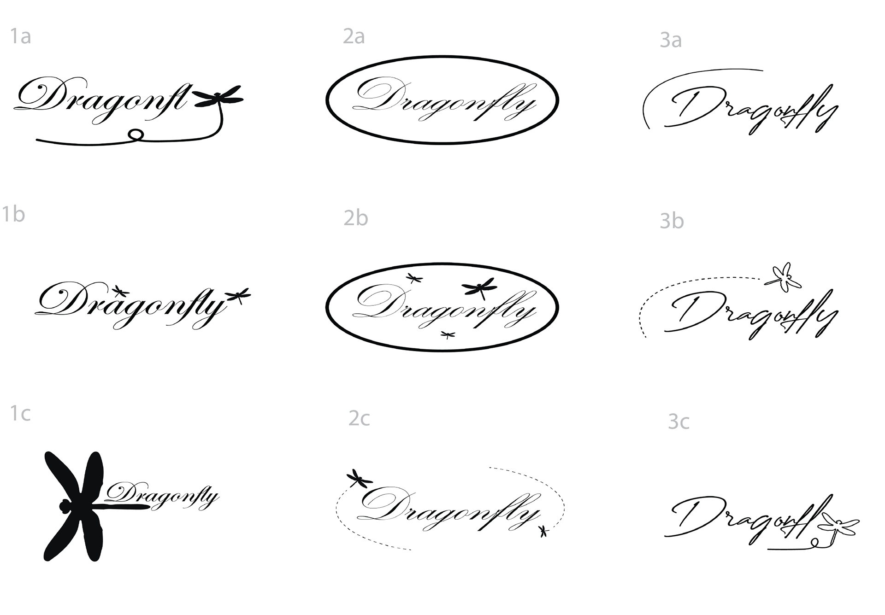
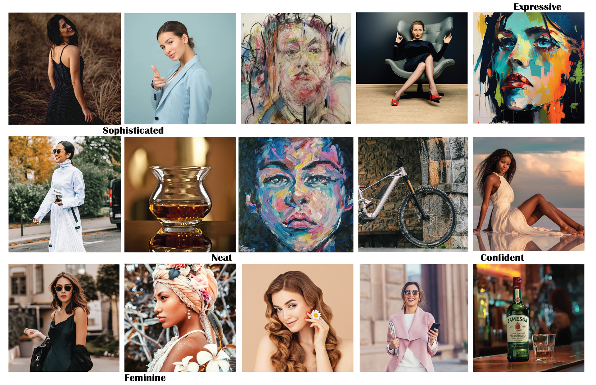
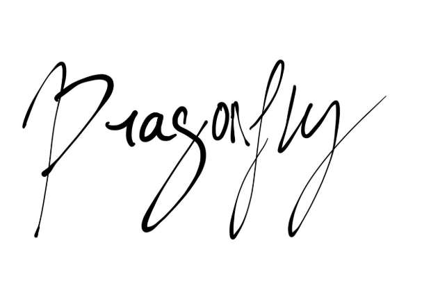

Product Application and Tools
The logo design for the makeup brand was applied to both a lip-gloss bottle and a skincare container, demonstrating how the branding could exist across different product types. The design process was completed using Adobe Illustrator and Photoshop. To create realistic product mockups, smart objects from Freepik—credited to Alexandercho—were used, helping bring the brand vision to life in a polished, professional manner.

Initial Logo Drafting
Early-stage logo drafts were developed in Adobe Illustrator to explore a range of visual directions. This experimentation phase focused on shaping the tone and style of the brand through typography and layout variations. These drafts served as a foundation for narrowing down the brand's aesthetic and establishing consistency across different applications.

Mood Board and Visual Direction
A mood board was created in Adobe Illustrator to ideate and guide the visual identity of the brand. Keywords such as "Feminine, Neat, Confident, Sophisticated, and Expressive" were used to define the brand's personality. This board helped in selecting imagery, color palettes, and stylistic cues that aligned with the intended message and tone of the brand.

Typography and Font Choice
Various handwritten font options were explored to give the logo a more personal and expressive touch. The final font selection, shown on the left during the comparison stage, was chosen for its ability to balance femininity with sophistication. Typography played a key role in communicating the brand’s personality and helped distinguish it in the competitive beauty industry.
Final Logo and Color Variations
The final logo was developed by refining earlier sketches and drafts into a cohesive design. Color was then introduced to bring versatility to the brand, with versions created both inside and outside of a square frame. This flexibility allows the logo to adapt to different packaging and marketing needs while maintaining visual consistency across the brand.